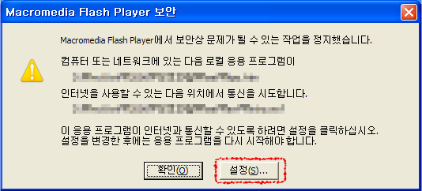
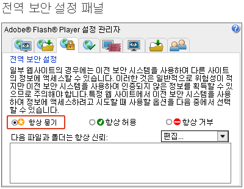
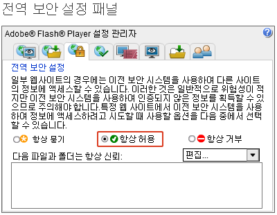
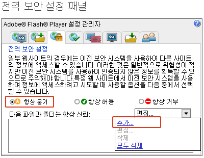
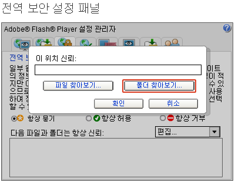
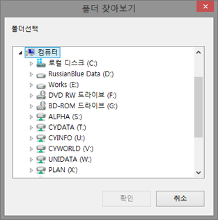
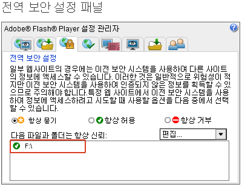

| 차시명 |
|---|
도구→팝업 차단→팝업 차단 설정 중요
일부 웹사이트의 경우 이전 보안 시스템을 사용하여 다른 사이트의 정보에 엑세스 할 수 있습니다. 이러한 것은 일반적으로 위험성이 적지만 이전 보안시스템을 사용하여 인증되지 않은 정보를 획득할 수 있으므로 주의해야 합니다.
때문에 Flash Player에서는 로컬 시스템에서 인터넷으로 정보를 주고 받을 때, 또는 특정 웹사이트에서 이전 보안 시스템을 사용하여 정보에 엑세스하려고 시도할 때 이용자의 보안 설정을 요구합니다.
로컬 시스템에 위치한 테스트용 콘텐츠에서는 로컬 시스템과 인터넷(웹 브라우져)으로의 정보 교환을 시도하기 때문에 Flash Player의 전역 보안 설정 패널에서 해당 콘텐츠의 위치를 허용하지 않으면 일부 기능의 사용에 대해 제한을 받으므로 본 설명에 따라 본 콘텐츠의 위치에 대한 Flash Player의 전역 보안 설정을 허용해 주시기 바랍니다.
로컬 시스템의 플래시 무비에서 인터넷(웹 브라우저)으로 통신을 시도할 때 아래와 같은 경고창이 뜹니다.
이때 설정버튼을 누르면 Flash Player 설정 관리자 사이트로 이동을 합니다.
또는 직접 주소를 입력하여 Flash Player 설정 관리자 사이트로 이동할 수 있습니다

아래 그림은 Flash Player 설정관리자 전역보안 설정 패널입니다.
이 곳에서 Flash Player의 전역보안 설정을 항상 묻기 항상 허용 항상 거부 세 가지로 설정 할 수 있습니다. 기본값은 항상 묻기로 되어 있습니다.
이곳에서 항상 허용으로 설정하면 이후에 또 다시 설정할 필요가 없습니다.

1. 항상 허용을 선택한 경우
항상 허용을 선택하면 사용자는 모든 Flash를 신뢰하며 보안 관련 팝업 메세지가 나타나지 않기를 원하는 것으로 인식하며, 보안 팝업 질문은 다시 표시되지 않습니다.
항상 허용으로 선택하면 Flash Player 전역보안 설정이 완료되며 모든 웹브라우저를 종료하고 다시 시작합니다.

2. 항상 묻기을 선택한 경우
항상 묻기를 선택하면 Flash Player가 신뢰할 수 있는 사이트나 파일 및 폴더를 지정해 주어야 합니다. 우측 콤보박스의 키를 누르면 나오는 리스트에서 추가 버튼을 클릭하십시오.

2. 항상 묻기을 선택한 경우
신뢰할 위치를 지정하는 팝업이 뜨게 되면 신뢰할 수 있는 파일 또는 폴더를 지정해 줍니다. 파일 찾아보기를 통해 파일을 지정하게 되면 해당 파일에서만 보안 설정이 적용되고, 폴더 찾아보기를 통해 폴더를 지정하게 되면 해달 폴더내의 모든 파일 및 폴더에 보안 설정이 적용 됩니다.

2. 항상 묻기을 선택한 경우
폴더 찾아보기를 선택하면 로컬 시스템의 구조가 트리 메뉴로 나타나게 됩니다.
본 검수용 콘텐츠가 위치한 로컬상의 디렉토리 (CD-ROM 드라이브 또는 다른 하드디스크의 특징 폴더)를 지정해 주십시오.

2. 항상 묻기을 선택한 경우
신뢰할 수 있는 파일 및 폴더를 선택하면 하단 Flash Player 설정 관리자 하단에 선택한 파일 또는 폴더의 위치가 등록이 되며 Flash Player는 이 위치의 Flash를 신뢰하게 되어 보안 팝업 질문을 표시하지 않게 됩니다.

Flash Player의 전역 보안 설정이 완료되었습니다. 본 안내문 및 모든 웹브라우저를 종료한 후 인덱스 페이지를 다시 실행시키십시오.
감사합니다.